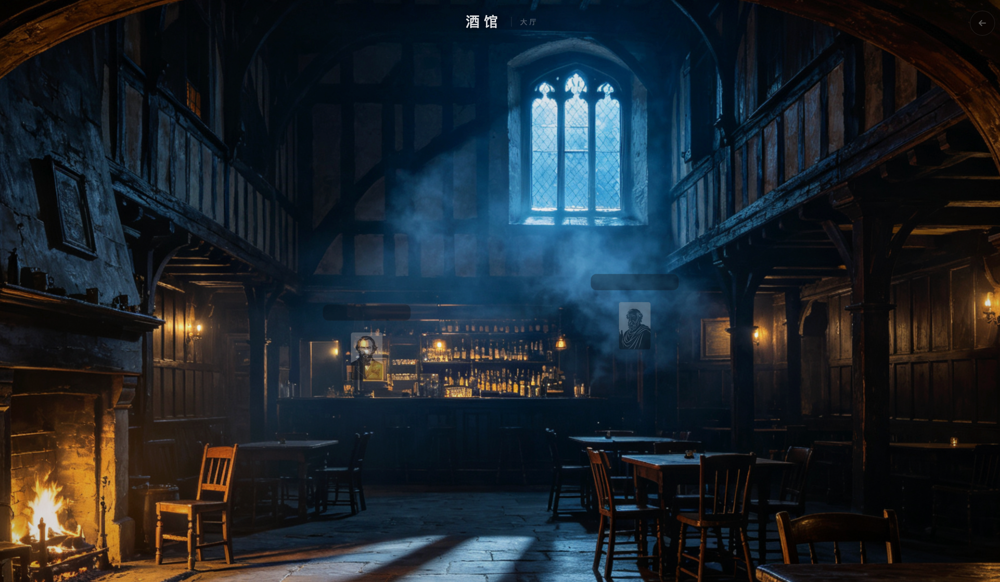
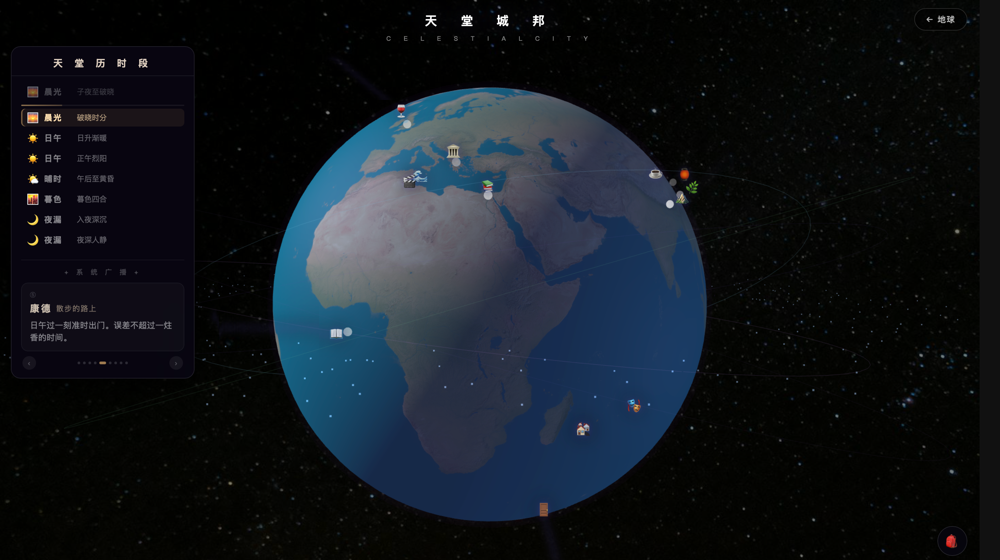
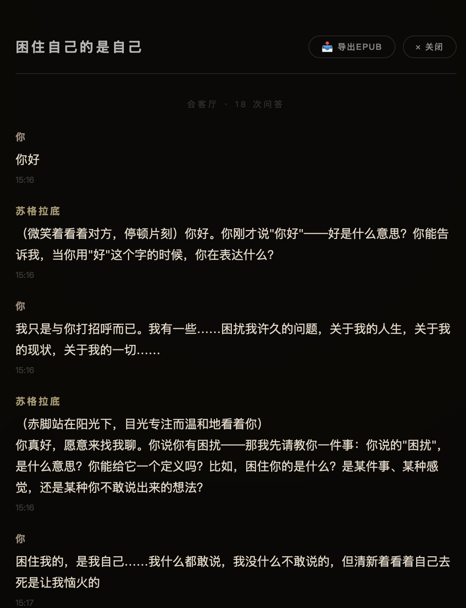
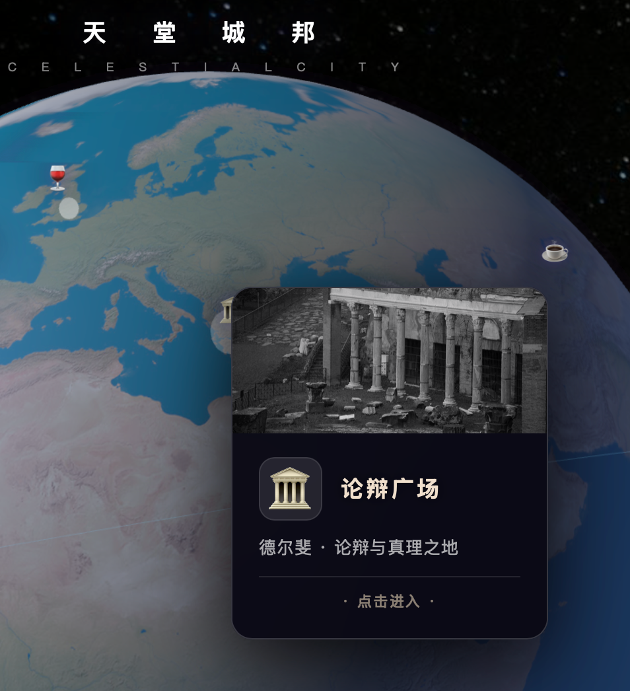

Interactive Worldbuilding · 2026
天堂城邦
一个把世界观、角色交互、地图入口与流式对话放进同一空间体验里的小型叙事项目。重点不是单张概念图，而是场景、人物与对话在页面里一起成立的感觉。

Project View
首页进入时的整体氛围与场景入口
Scene Feeling
先把视觉气氛建立起来，再让地图、人物和对话逐层展开，这个项目的重点是“进入世界”而不是单纯展示功能。
Interaction Logic
用户不是只看图，而是在场景里移动、切换视角、接近角色，并进入流式对话。
UI Tone
界面尽量压低存在感，让文字、空间纵深和人物成为主角，所以这里也用了更克制的作品页排版。


